★SGL User's Manual
★PROGRAMMER'S TUTORIAL
★SGL User's Manual
★PROGRAMMER'S TUTORIAL
本章では、イベント構造及びイベント管理関数の具体的な用法について解説します。
イベントの観念を使用するにより、プログラムをプログラムイベント（プログラム中の要素１つ１つ）の組み合わせとして記述することが可能となり、これによりプログラム全体の流れを非常に把握しやすくなります。
さらに各プログラムイベントの共通使用が可能なため、プログラムの簡素化も計れます。
図10-1 イベントイメージ
/* 前 略 */
slInitEvent(); /* イベントの初期化 */
slSetEvent((void*)game_demo); /* イベントの登録 */
slSetEvent((void*)game_play);
slSetEvent((void*)game_over);
slExecuteEvent(); /* イベントの実行 */
void game_demo(EVENT *evptr){ /* イベントの実行１(game_demo) */
:
}
void game_play(EVENT *evptr){ /* イベントの実行２(game_play) */
:
}
void game_over(EVENT *evptr){ /* イベントの実行３(game_over) */
:
}
/* 後 略 */
|
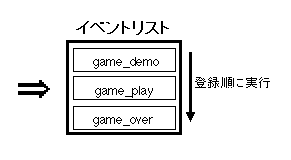 |
図10-2 EVENT構造体
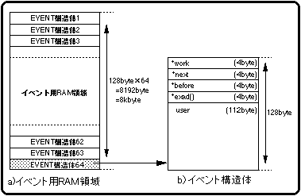
*work ：user領域拡張のためのWORK構造体の先頭アドレス。
*next ：次に実行されるイベントの先頭アドレス。
*before：直前に実行されるイベントの先頭アドレス。
*exad()：イベントとして実行する関数の格納される領域の先頭アドレス。
user[] ：イベント登録された関数が使用する変数を格納するためのuser領域。
ワークなどを用いてuser領域を拡張することも可能。
図10-3 イベントリストの構造
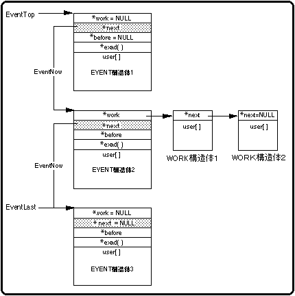
注 意 |
イベントの初期化を実行しないでイベント処理を使用した場合、初期化されないバッファやイベントリスト等との整合がとれなくなり、最悪の場合、CPUが停止することもありえます。 （詳細は |
|---|
図10-4 イベントリストの作成
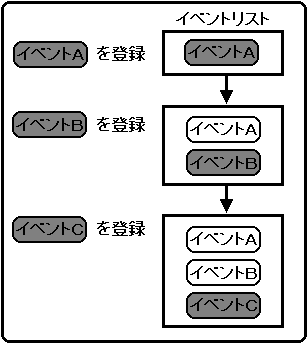
● イベント書式 ●void function_name(EVENT *evptr){execute_contents} ↑ ↑ ↑ ｜ ｜ イベント実行内容 ｜ EVENT構造体の先頭アドレス イベント名
/* 前 略 */
slSetEvent((void *)init_cube);
slExecuteEvent();
typedef struct cube{ FIXEDpos[xyz];
ANGLE ang[xyz]
;
:
Sint16 unset_count;
Sint16 unset_i;
} CUBE;
void init_cube(EVENT *evptr)
{
CUBE *cubeptr;
cubeptr=(CUBE *)evptr -> user;
cubeptr->pos[x]=pos_x;
:
cubeptr->unset_count=0;
disp_cube(evptr);
}
/* 後 略 */
|
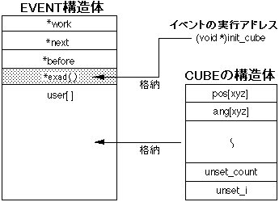 |
図10-7 イベントの実行
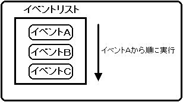
図10-8 イベントの追加
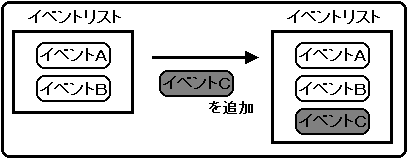
図10-9 イベントの挿入
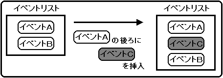
図10-10 イベントの削除
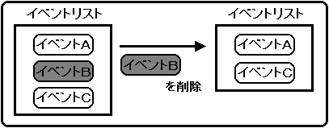
図10-11 イベント実行中のイベントリストの変更
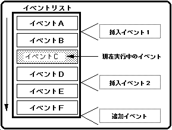
図10-12 WORK構造体
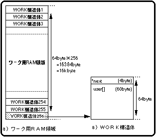
*next ：チェーン構造として連結させたいWORK構造体の先頭アドレス。
チェーン構造として後に続くワークが存在しない場合は、NULLが代入されます。
user[]：拡張されたuser領域（60byte）。
図10-13 ワークの連結
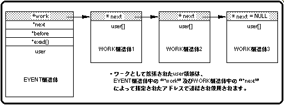
図10-14 イベント用RAM領域を使用したuser領域の拡張
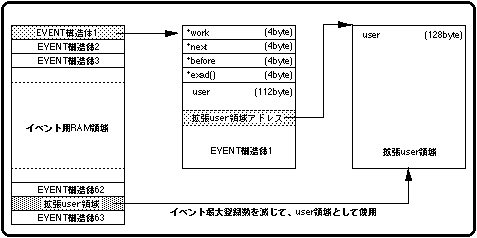
関数“slReturnEvent”によって指定されたEVENT構造体はシステムに返還される。
EVENT構造体はイベントとして解放されないためイベントリスト中に存在し続ける。
領域はシステム的にはフリーな状態にあるため、関数“slSetEvent”等を用いて自由に使用できる。
イベントリストに登録されているが、領域はフリーな状態にあるためEVENT構造体の内容が書き換えられ、これによりチェーン構造に不具合が生じる。
チェーン構造の整合が取れなくなり、最悪の場合、CPUが停止する。
図10-15 誤ったイベント操作
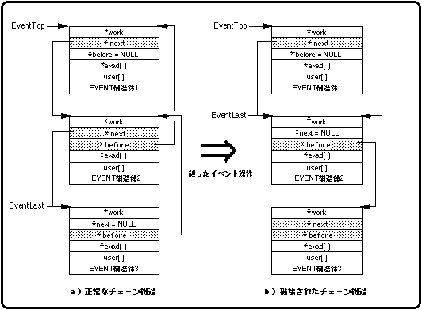
フロー10-1 イベント処理の流れ
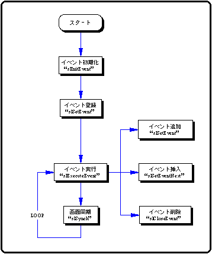
/*----------------------------------------------------------------------*/
/* Event Demo */
/*----------------------------------------------------------------------*/
#include "sgl.h"
void ss_main(void)
{
slInitSystem(TV_320x224,NULL,1) ;
slPrint("Sample program 10" , slLocate(9,2)) ;
set_event();
while(-1) {
slExecuteEvent() ;
slSynch() ;
}
}
フロー10-2 sample_10：メインループ
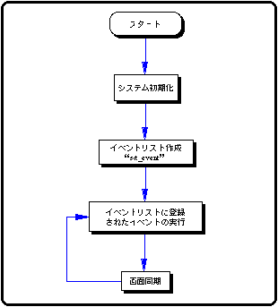
#include "sgl.h"
extern PDATA PD_CUBE;
#define POS_X toFIXED(0.0)
#define POS_X_UP 200.0
#define POS_Y toFIXED(20.0)
#define POS_Z toFIXED(270.0)
#define POS_Z_UP 50.0
#define SET_COUNT 500
static void init_cube2(EVENT*);
typedef struct cube {
FIXED pos[XYZ];
ANGLE ang[XYZ];
ANGLE angx, angz;
ANGLE angx_up , angz_up;
PDATA *poly;
Sint16 set_count , set_i;
Sint16 unset_count , unset_i;
} CUBE;
static void disp_cube(EVENT *evptr)
{
CUBE *cubeptr;
cubeptr = (CUBE *)evptr->user;
slPushMatrix();
{
slTranslate(cubeptr->pos[X] , cubeptr->pos[Y] , cubeptr->pos[Z]);
cubeptr->pos[X] = POS_X + POS_X_UP * slSin(cubeptr->angx);
cubeptr->pos[Y] = cubeptr->pos[Y];
cubeptr->pos[Z] = POS_Z + POS_Z_UP * slCos(cubeptr->angz);
cubeptr->angx += cubeptr->angx_up;
cubeptr->angz += cubeptr->angz_up;
slRotY(cubeptr->ang[Y]);
slRotX(cubeptr->ang[X]);
slRotZ(cubeptr->ang[Z]);
cubeptr->ang[X] += DEGtoANG(5.0);
cubeptr->ang[Y] += DEGtoANG(5.0);
cubeptr->ang[Z] += DEGtoANG(5.0);
slPutPolygon(cubeptr->poly);
}
slPopMatrix();
cubeptr->set_count -= cubeptr->set_i;
if(cubeptr->set_count < 0 ) {
slSetEvent( (void *)init_cube2 );
cubeptr->set_count = SET_COUNT;
}
cubeptr->unset_count -= cubeptr->unset_i;
if(cubeptr->unset_count < 0 ) slCloseEvent(evptr);
}
static void init_cube1(EVENT *evptr)
{
CUBE *cubeptr;
cubeptr = (CUBE *)evptr->user;
cubeptr->pos[X] = POS_X;
cubeptr->pos[Y] = POS_Y;
cubeptr->pos[Z] = POS_Z;
cubeptr->ang[X] = cubeptr->ang[Y] = cubeptr->ang[Z] = DEGtoANG(0.0);
cubeptr->angx = cubeptr->angz = DEGtoANG( 0.0);
cubeptr->angx_up = cubeptr->angz_up = DEGtoANG( 0.0);
cubeptr->set_count = SET_COUNT;
cubeptr->set_i = 1;
cubeptr->unset_count = 0;
cubeptr->unset_i = 0;
cubeptr->poly = &PD_CUBE;
evptr->exad = (void *)disp_cube;
disp_cube(evptr);
}
static void init_cube2(EVENT *evptr)
{
CUBE *cubeptr;
cubeptr = (CUBE *)evptr->user;
cubeptr->pos[X] = POS_X;
cubeptr->pos[Y] = POS_Y - toFIXED(50);
cubeptr->pos[Z] = POS_Z + POS_Z_UP;
cubeptr->ang[X] = cubeptr->ang[Y] = cubeptr->ang[Z] = DEGtoANG(0.0);
cubeptr->angx = cubeptr->angz = DEGtoANG( 0.0);
cubeptr->angx_up = cubeptr->angz_up = DEGtoANG( 3.0) * (-1);
cubeptr->set_count = 0;
cubeptr->set_i = 0;
cubeptr->unset_count = SET_COUNT / 2 ;
cubeptr->unset_i = 1;
cubeptr->poly = &PD_CUBE;
evptr->exad = (void *)disp_cube;
disp_cube(evptr);
}
static void init_cube3(EVENT *evptr)
{
CUBE *cubeptr;
cubeptr = (CUBE *)evptr->user;
cubeptr->pos[X] = POS_X;
cubeptr->pos[Y] = POS_Y + toFIXED(50);
cubeptr->pos[Z] = POS_Z + POS_Z_UP;
cubeptr->ang[X] = cubeptr->ang[Y] = cubeptr->ang[Z] = DEGtoANG(0.0);
cubeptr->angx = cubeptr->angz = DEGtoANG( 0.0);
cubeptr->angx_up = cubeptr->angz_up = DEGtoANG( 3.0);
cubeptr->set_count = 0;
cubeptr->set_i = 0;
cubeptr->unset_count = 0;
cubeptr->unset_i = 0;
cubeptr->poly = &PD_CUBE;
evptr->exad = (void *)disp_cube;
disp_cube(evptr);
}
void *event_tbl[] = {
init_cube1 ,
init_cube2 ,
init_cube3
};
void set_event()
{
EVENT *evptr;
void **exptr;
Uint16 cnt;
slInitEvent();
for(exptr = event_tbl , cnt = sizeof(event_tbl) / sizeof(void *); cnt--> 0;) {
evptr = slSetEvent(*exptr++);
}
}
フロー10-3 samp_10：イベント実行内容
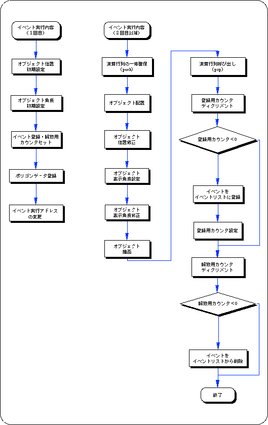
関数型 | 関 数 名 | パ ラ メ ー タ | 機 能 |
|---|---|---|---|
| void | slInitEvent | void | イベントの初期化を行います |
| EVENT | *slSetEvent | void(*func)() | イベントリストイベントを登録・追加します |
| void | slExecuteEvent | void | リストに登録されたイベントを順に実行します |
| EVENT | *slSetEventNext | EVENT *evptr,void(*func)() | 指定されたイベントの直後に、新たなイベントを挿入・登録します |
| void | slCloseEvent | EVENT *evptr | イベントリストからイベントを削除し、同時に付属するワークもシステムに返還・開放します |
| WORK | *slGetWork | void | ワーク領域を確保します |
| void | slReturnWork | WORK *wkptr | ワーク領域を返還・解放します |
| EVENT | *slGetEvent | void | イベントと同サイズのRAM領域をイベント用RAMに確保します |
| void | slReturnEvent | EVENT *evptr | 関数"slGetEvent"で確保された領域をシステムに返還・解放します |
★SGL User's Manual
★PROGRAMMER'S TUTORIAL